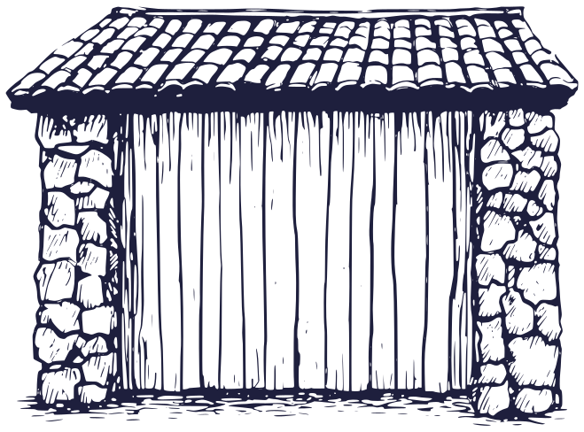
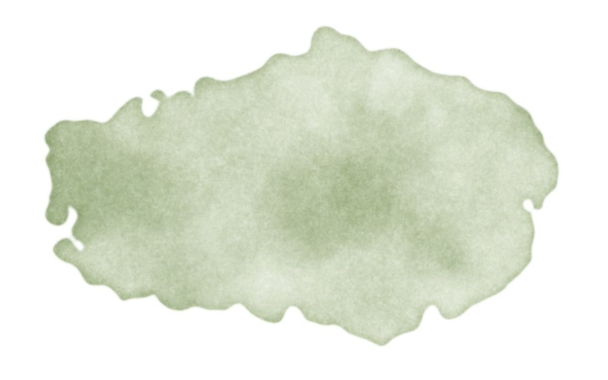

Residencia artística y creación sonora · AjijicArtist residency and sound creation · Ajijic
Espacio y tiempo para crear Space and time to create
Detrás de un portón de madera azul jacaranda, en el centro de Ajijic, artistas de la experimentación sonora habitan, crean y comparten lo que nace aquí con la comunidad de la Ribera.Behind a jacaranda-blue wooden gate in the heart of Ajijic, artists working in sound experimentation live, create and share what is born here with the Lake Chapala community.
Próximo en la casaNext at the house Nido · sesión de escucha — domingo 25 de octubre · 12:00 hNido · listening session — Sunday, October 25 · 12 pm
AgendaCalendar
Te esperamos detrás de la puertaWe'll be waiting behind the door
Cupos cercanos, a propósito. Reserva por WhatsApp y te confirmamos tu lugar.Small audiences, on purpose. Book on WhatsApp and we'll confirm your seat.
Fechas y obras de ejemplo para esta propuesta de sitio.Sample dates and works for this website proposal.
Artistas y audiencias coinciden en lo mismo al cruzar la puerta: asombro.Artists and audiences agree on one thing after walking through the door: wonder.
Arq. Andrés Aguilar Martínez Negrete · fundador y directorfounder and director
Residencia artísticaArtist residency
Ven a crear a la Ribera de ChapalaCome create on Lake Chapala
Para desarrollar tu proyecto sin prisa.To develop your project without hurry.
Para habitar y crear detrás de la puerta.To live and create behind the door.
Para grabar lo que nace en residencia.To record what the residency brings to life.
Talleres, clínicas y una Puerta abierta al cierre.Workshops, clinics and an Open door at the close.
Estudio de grabaciónRecording studio
Donde la obra toma cuerpoWhere the work takes shape
Un estudio para compositores que buscan materializar sus obras: la madera del portón, la piedra de los muros y el silencio del centro de Ajijic.A studio for composers ready to bring their work to life: the wood of the gate, the stone walls and the quiet of central Ajijic.
Pieza generativa en vivo: síntesis FM, ruido filtrado y glitch. Nunca suena igual dos veces.A live generative piece: FM synthesis, filtered noise and glitch. It never plays the same way twice.
EducaciónEducation
Que cada niña y cada niño viva el arte de cercaSo every child can experience art up close
Los residentes comparten su oficio con la Ribera. Construimos instrumentos con semillas, carrizo y agua, y escuchamos lo que suena alrededor.Residents share their craft with the lakeside community. We build instruments from seeds, reeds and water, and listen to the sounds around us.

VisítanosVisit us
Busca el portón azulLook for the blue gate
Carretera Oriente 57, Centro
Ajijic, Jalisco, México
Recibe la agendaGet the calendar
Un correo al mes, sin prisa.One email a month, no rush.